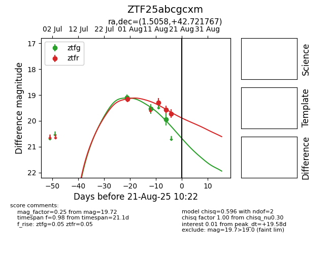

Target ZTF25abcgcxm at 2025-08-21 10:22, see:
FINK: fink-portal.org/ZTF25abcgcxm
Lasair: lasair-ztf.lsst.ac.uk/objects/ZTF25abcgcxm
ALeRCE: alerce.online/object/ZTF25abcgcxm
alt names
ZTF25abcgcxm (ztf,alerce)
coordinates:
equatorial (ra, dec) = (1.5058,+42.72177)
galactic (l, b) = (114.1134,-19.37100)
photometry
last ztfg=19.94, ztfr=19.72
3 ztfg, 4 ztfr detections
